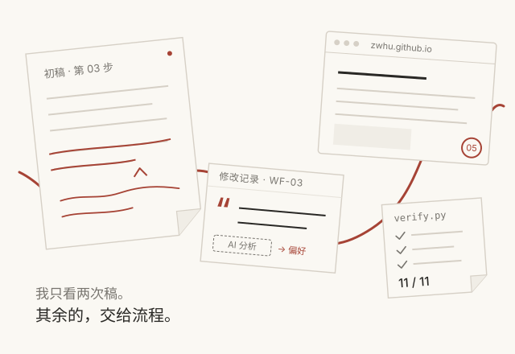
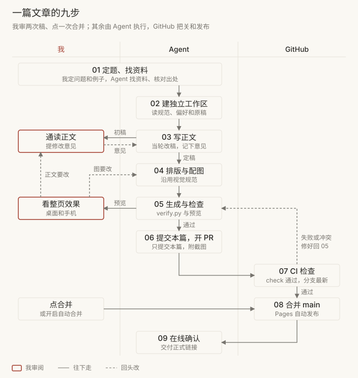

我和 Agent 写博客的流程，以及它为什么管用

这个博客的文章由我和 Agent 一起写。11 月 2 日下午到 3 日凌晨，仓库合并了 16 个 PR，有新文章、译文，也有多轮改稿。每篇文章里，我做的事只有几样：定题，看两次稿，点合并。
这篇文章讲两件事。前两节讲流程是什么样的，为什么这样分工能用；第 3 到第 7 节讲每一步具体怎么做，尤其是我的改稿意见怎么留下来。其中三处可以点开操作。
1. 九步流程，我只在两处看稿
一篇文章从定题到上线分九步，分给三方：我、Agent 和 GitHub。

我定下要讲的问题和例子，在第 03 步通读正文，在第 05 步看生成后的整页，CI 通过后点合并。找资料、改文件、画图、生成页面、跑检查、开 PR、确认上线，都由 Agent 做。
虚线是回头路。正文的问题留在第 03 步当轮改；图和排版的问题回第 04 步；CI 失败或与 main 冲突，修好后回第 05 步重新生成、检查。哪一步出问题就回哪一步，前面定好的部分不用重做。
2. 为什么这样管用
这套流程要解决五个问题：每一步都等我确认；新开的会话忘了上次的要求；几件事的改动混进同一个 PR；改坏了没人发现；Agent 从改稿里学错我的习惯。下面五个做法，各自对着其中一个。
我的时间只花在判断上
Agent 能自己核对的事，不排队等我。我看稿是为了提内容意见，不用逐句批准；已经给过的操作授权，后面继续有效。第 05 步我已经看过整页，PR 开出来以后就只等 CI。16 个 PR 里，有 8 个从创建到合并不到两分钟。
规则写在文件里，按任务读
我的要求不靠 Agent 记住对话。仓库根目录的 AGENTS.md 是一张表：写作读 doc-lint 和个人写作偏好，改页面读视觉规范，改生成逻辑读生成说明。每次只读这次任务需要的几份，新开的会话也按这张表读。我提过的“宽度整体都超出太多”“这个箭头很奇葩”，改完都写进了视觉规范和画图脚本，下一篇按新的规则画。
一篇文章，一个工作区，一个 PR
每篇文章从最新的 main 建独立的 git worktree，只提交本篇的文件。早先在同一个工作区里并行改几件事，别处的导航改动混进了性能优化的 PR，只好另开 #5 把它移出去。写这篇的同时，Super-agent 那篇也在另一个工作区改稿，两篇各开各的 PR。
能自动查的，交给一条命令
改完以后，Agent 运行 python3 scripts/verify.py，一共 12 项检查。GitHub Actions 在每个 PR 上跑同一条命令；main 设了分支保护，检查不通过、分支落后于 main，都合不进去，管理员也不例外。到 11 月 3 日，这项检查在 GitHub 上跑了 37 次，全部通过。
改稿意见留原话，不让 Agent 学错
我纠正文字时，常常只说“不顺”“看不懂”，不解释原因。Agent 把我的原话、它的推测、我有没有评价改稿分开记。推测标“待确认”，我确认之前不进长期偏好，下一篇文章就不会照着猜错的习惯写。
3. 每一步怎么做
从这一节开始讲具体做法。图 1 的九步，每一步由谁来做、用到哪些文件、出了问题回到哪里，都在下面。
-
01确定问题、例子和资料
- 谁来做
- 我定要讲的问题和贯穿全文的例子；Agent 找资料，核对出处与数据。
- 用到
- 原文、固定版本的源码、实验记录。
-
02建独立工作区，读规范和原稿
- 谁来做
- Agent 从最新 main 建独立工作区，只读这次任务需要的指南。
- 用到
AGENTS.md按任务指向 doc-lint、个人写作偏好和视觉规范。- 为什么
- 在同一个工作区并行改几件事，曾让别的改动混进 PR。
-
03先写正文，我来通读
- 谁来做
- Agent 写正文，我逐段读。我提意见，它当轮改稿，并记下原句、我的原话和改后版本。
- 用到
- doc-lint、个人写作偏好、修改记录。
- 出问题时
- 正文还有问题就留在这一步继续改；定稿后才进入排版。
-
04排版与配图
- 谁来做
- Agent 沿用博客的配色和字体画图，图放在正文列内，手机上沿用同一张图。
- 用到
- 视觉规范、图源和 SVG 生成脚本。
- 出问题时
- “配图感觉很不和谐”“这个箭头很奇葩”这类意见，都回到这一步改图源。
-
05生成与验证，我看整页
- 谁来做
- Agent 运行生成和检查，在桌面和手机上预览；我看整页效果。
- 用到
python3 scripts/render-site.py、python3 scripts/verify.py。
-
06只提交本篇文件，开或更新 PR
- 谁来做
- Agent 逐个暂存本篇的文件，用
git diff --cached核对，再创建 PR，或者更新已有的那一个。 - 约定
- 同一篇文章发布前的改稿集中在一个 PR；公共样式和导航另开 PR。
-
07CI 通过，且与 main 同步
- 谁来做
- PR 创建或更新时 GitHub Actions 自动检查。main 要求检查通过、分支保持最新。
- 出问题时
- 修源文件，或同步 main 并保留双方的修改意图，重新生成后回 05。
- 遇到过
- 正文和自动计算的阅读时长挤在同一行 HTML，两边各改一处就冲突。之后把手写正文和生成的元信息分行放。
-
08合并 main，等 Pages 发布
- 谁来做
- 合并后 main 再跑一遍检查，GitHub Pages 发布静态文件，不需要构建步骤。
-
09在线确认，交付链接
- 谁来做
- Agent 打开线上页面，确认能看到这次的新文字和新图，再交付正式链接、PR 与验证结果。
- 遇到过
- 我在页面上看到一段已经删掉的话。核对线上内容和发布提交后，删除其实已经生效。之后交付时都附上正式链接，不凭旧标签页判断。
4. 改稿意见怎么记
先看一个例子。写 Super-agent 那篇文章时，我指着第 01 节的开头说：“这句话非常不顺，太AI味，太读不懂了。”Agent 改了一版，我还是没用，自己写了一句：
需求是在群聊里提出的，而代码在 PR 里评审，需求后续的问题还是得回到群聊中讨论解决。
这句话随后进了正文。问题在下一次写作：Agent 应该从这件事里学到什么？是少用并列短句，还是多用“而”和“还是得”？我没解释过原因，这些都只是它的猜测。如果把猜测当成我的习惯写进规则，下一篇文章只会换一种方式不像我。
所以我纠正表达时，不用额外说“记下来”。Agent 在改稿的同一轮保存五样东西：原句和位置、我的原话、改后的版本、原因来自谁、我有没有评价这次改稿。
最容易混的是原因。我常常只说“不顺”“看不懂”“不需要”，不解释为什么。这时原因就写“未说明”。Agent 可以写自己的推测，但要标“待确认”，不能写成我的想法。
下面是写 Super-agent 文章时的六处反馈。切换卡片，可以看到每处我说了什么、谁改的，以及哪些部分还只是推测。
WF-03 · 群聊、PR 与后续问题
第 01 节开头
“这句话非常不顺，太AI味，太读不懂了”
在群聊提出请求，在 PR 里评审，用 CI 检查改动，隔几周再反馈回归：入口改变，任务可以延续。让多个独立会话各自理解整段历史，既费推理，也需要人反复搬运信息。
需求在群聊里提出，代码在 PR 里评审，后续问题又回到群聊。如果每次都由一个新 Agent 接手，人就得找出旧需求和 PR，重新解释之前做了什么。
需求是在群聊里提出的，而代码在 PR 里评审，需求后续的问题还是得回到群聊中讨论解决。
AI 推测 · 待确认我的版本先说清群聊和 PR 各管什么，“而”区分两处的分工，“还是得”说明后续仍要讨论。AI 第一次改写太早转到了新 Agent 接手的成本。
句子是我写的，这一点已确认；对用词原因的分析，我没有确认过。
WF-01 · “作者”指的是谁
介绍双层分工及其他提到原团队的段落
“这里不要用作者了吧，直接就是 dsh 或者 superagent原作者”
作者把职责分成两层。
dsh 把职责分成两层。
AI 推测 · 待确认泛称“作者”可能让读者分不清本站作者和原团队。
原因未说明。只用于这篇文章对原团队的称呼，不等于所有文章都不能用“作者”。
WF-02 · 图里的注释
重绘架构图的图注与图内注释
“然后图片里面的很多注释都没意义”
据原文图 4 重绘｜Router 维持共享的高层关联，Worker 在各自上下文中执行。 来源 · 对照原图。沿用博客字体与配色；作者设计与公开实现的范围仍按正文说明。
图 4 · 双层分工（重绘）。dsh 原文 · 原图
AI 推测 · 待确认重复正文、交代绘图过程的注释增加了阅读负担。
我没逐项说哪些没意义。来源链接和原图入口保留；具体删法我还没评价。
WF-04 · 结尾的投入评估
第 06 节结尾
“这句话也不需要”；后来又说“这句话也不用了”
再观察一个验收通过的任务需要人主动操作多少分钟，质量与返工如何变化，新增模型与维护开销是否值得。失败、误触发和额外审查也计入，不能只统计成功演示。botmux 已有不少接入、执行和恢复能力，投入应由真实缺口决定，具体比较见配套文章。
整段删除。
AI 推测 · 待确认这段转向了通用的投入评估建议，打断了结尾。
原因未说明。两次指向同一段，只记一条；也不能推断我不接受任何成本分析。
WF-05 · 实验限制
第 05 节补充实验之后
“这句话不太像是人话，你结合我之前的说话习惯，改一下”
分摊开销下降，但整批等待超过一分钟。耗时包含 CLI/Harness 路径；模板有限、大批次重复少，历史原始响应缺失，只能说明趋势，不能证明生产路由正确率。完整次数、汇总与缺失记录的限制见实验附录。
每条消息平均用的时间少了，但要等到整批结果，还是得一分钟以上。这里的耗时也包括 CLI 和 Harness 运行所花的时间。
这次用的消息模板不多。每批 128 条的测试，每个模型只跑了两次，原始返回结果也没有保存下来，没法再逐条核对。所以，这组数据可以用来看批量处理后的耗时变化，实际用起来能不能把消息分对，还得另外测试。具体数据和测试记录见实验附录。
AI 推测 · 待确认耗时、测试方法和结果限制挤在分号和术语里；拆开说，把“大批次重复少”换成具体次数，会更好懂。
“128 条、两次”来自实验附录，不是从语气推出来的。改稿我还没评价。
WF-06 · “续办流程”和“任务身份”
引言第二段
“这句话也看不懂”
Super-agent 想接管这段续办流程。Router 判断任务关联，Worker 执行工作，程序保存任务与讨论的关系。聊天、PR 和一次执行可以结束，任务的身份仍然保留。
Super-agent 会把这次 CSV 修复记成一项任务，记录它来自哪个群聊、对应哪个 PR、目前处理到哪一步。PR 合并后，这条任务记录仍会保留。两周后同事在原话题里追问旧版 Excel 的问题，系统还能找到之前的需求和修复记录，接着处理。
AI 推测 · 待确认“续办流程”“任务的身份”放在开头，没有具体指向；先接着讲 CSV 的例子更容易懂。
改稿我还没评价。文件后来又改过结尾，对话里没有对应的原话，所以不当作我的反馈。
5. 什么才算我认可了
六条记录里，最常见的状态是“尚无评价”。改稿提交了、页面上线了，只能说明改动已经执行。我没接着说话，也可能只是转去处理别的事。
下面几种情况，可以先自己判断，再看记录规则怎么处理。
-
AI 改写的段落已经提交，页面也上线了。
看答案
不能。上线只说明改动执行了。改得好不好，我还没评价。
-
AI 分析完我为什么那样写，我回了一句：“分析完给我把代码提交了吧”。
看答案
不能。这是提交指令，不代表我同意它的分析。
-
我说一句话不顺，然后自己写了一句换进去。
看答案
一部分。句子是我写的，可以当作我的表达样本。AI 对我为什么这样写的分析，我没确认。
-
我两次引用同一段话，要求删掉。
看答案
一部分。删掉这段的要求成立，但两次指向同一段，只算一条。重复出现时还要核对线上版本，看删除是否已经生效。
-
文件里出现一处新改动，对话里找不到对应的话。
看答案
不能。不靠 diff 推断是谁改的、为什么改。
-
AI 改完，我没回应，转去处理配图。
看答案
不能。沉默、换话题、任务结束，都不等于认可。
6. 六处反馈，零条长期偏好
个人写作偏好文件里，目前一条规则也没有。六处反馈里，原因我都没解释过；一处用的是我自己写的句子，其余几处的改稿我还没评价。从中能归纳出几个方向，但都只是候选：
| 候选 | 来自 | 还要确认什么 |
|---|---|---|
| 先讲具体场景和动作，再解释抽象概念。 | WF-03、WF-06 | 只适用于这几段，还是以后的技术文章都这样？ |
| 写清分工、转折和实际需要，不把几个名词并列起来当解释。 | WF-03 我写的句子、WF-05 | 对“而”“还是得”的解释是 AI 的归因，不能机械套词。 |
| 实验限制用具体事实说清楚，不压成一串备注。 | WF-05 | AI 改稿我还没评价，拆分方式不算已认可。 |
| 图注和结尾只留对本篇有用的信息。 | WF-02、WF-04 | 两处删除成立，什么算“有用”还没说清。 |
只有我说“以后都这样”“我习惯……”，或者确认了某个候选的适用范围，它才会写进偏好文件。在这之前，“而”“还是得”不会变成固定句式，“作者”“任务身份”也不会变成禁用词。
写作前，Agent 先读这份简短的偏好文件，需要例子时再沿链接读对应的记录，不用每次加载全部历史。
配图和 PR 的意见，不算文风
同一次写作里，我还提过不少和文字无关的意见。它们按问题类型放进不同的文件，不当作文风证据。
| 意见 | 之后怎么做 | 放在哪里 |
|---|---|---|
| “配图感觉很不和谐”“宽度整体都超出太多” | 沿用博客配色与字体，图放在正文列内，桌面和手机都实际预览。 | 视觉规范、文章 CSS 与图源 |
| “这个箭头很奇葩” | 重叠的线段和箭头连接点分开，检查方向、节点和文字。 | SVG 生成脚本 |
| 本地修好了，PR 还显示冲突 | 先核对 PR 实际用的分支和提交，再把修正推回那个分支。 | PR 与 CI 状态 |
7. 一条命令检查，剩下的靠看
改完以后，Agent 运行 python3 scripts/verify.py。本地和 CI 用同一个入口，一共 12 项检查：生成的区块是否过期、站内链接和锚点、学习页样式归属、加载预算与图片、分享图、SEO、评论，以及检查脚本自己的测试。任何一项失败都返回非零，CI 的 check 不通过，PR 就合不进 main。
| 程序能拦住 | 只能靠人看 |
|---|---|
| 改了模板或目录，生成的页面没更新 | 语气像不像我 |
| 站内链接、锚点或图片路径失效 | 记下的修改原因是不是我真正的想法 |
| HTML 和图片超出加载预算 | 页面在浏览器里排得对不对 |
| SEO、sitemap 与配置不同步 | 交互在手机上能不能用 |
右边一栏，文字按 doc-lint 逐段读，页面在桌面和手机上实际打开看。交付时 Agent 要说明做了哪些检查，不能把“静态检查通过”说成“页面没问题”。
8. 还没做完的
- 候选偏好要我逐条确认适用范围，现在偏好文件还是空的。
- 修改记录只有一篇文章的例子，样本还太少。
- 第 2 节的数字只覆盖 11 月 2 日到 3 日的 16 个 PR，能说明流程跑得通，还说明不了长期效果。
- 通用的 Markdown 转 HTML 生成器还没写，新文章仍直接维护 HTML，这篇也是。
评论
评论由 GitHub Discussions 提供。